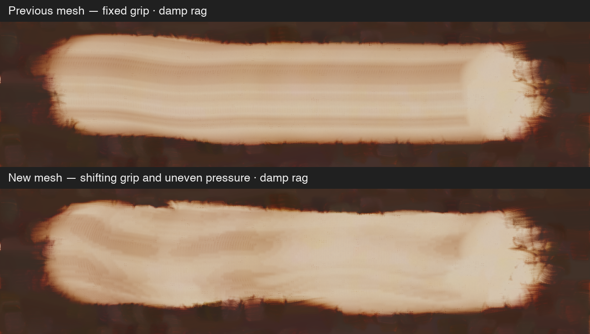
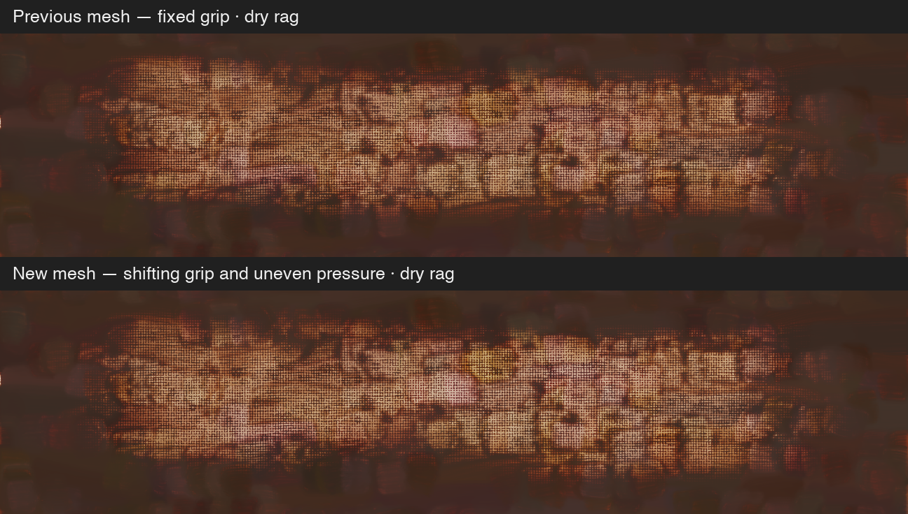

Same paint, cloth seed, wipe path, pressure setting and solvent amount. The new grip gradually rotates, shifts and tilts its pressure across the cloth. The connected mesh responds to those changes. Motion is seeded and advances with physical travel, retaining its phase between wipes.


Separate originals: dry, one wipe · damp, one wipe · dry, two wipes · damp, two wipes · untouched paint.
Experimental hand-motion amplitudes; not measured cotton or hand mechanics. The previous prototype’s flat support plane and lack of self-collision remain. Previous experiment and research.
All 11 focused paint and Lua/session rag tests passed; 1 diagnostic test remained ignored. Test log. Full release validation has not run.
Saved locally as an unapplied patch; shipping source restored. Cloth solver · Render source · Render log.